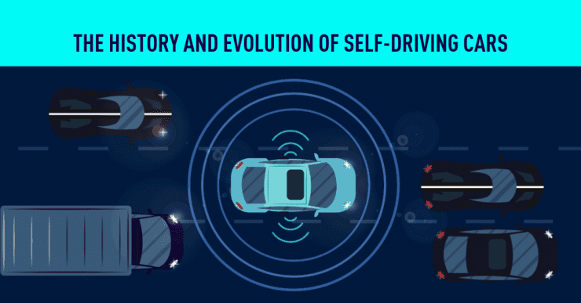
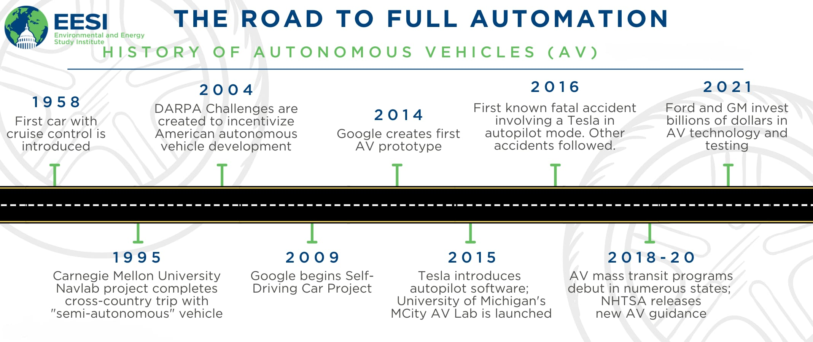

Topic information
- Category: Technological Innovations
- Posted on: 07 January, 2022
- Author: Aditya Verma
What is Self Driving car?
A self-driving car, also known as an autonomous vehicle
(AV), driverless car, or robotic car (robo-car), is a car incorporating vehicular automation,
that is, a ground vehicle that is capable of sensing its environment and moving safely with little or no
human input. The future of this technology may have an impact on multiple industries and other
circumstances.
Self-driving cars combine a variety of sensors to perceive their surroundings, such as radar, lidar,
sonar, GPS, odometry and inertial measurement units. Advanced control systems interpret sensory
information to identify appropriate navigation paths, as well as obstacles and relevant
signage.
Possible implementations of the technology include personal self-driving vehicles, shared robotaxis, and connected vehicle platoons. Several projects to develop a fully self-driving commercial car are in various stages of development, but there are no self-driving cars available for everyday consumers.

Autonomy in vehicles is often categorized in six levels
according to a system developed by SAE International (SAE J3016, revised periodically). The SAE levels can be roughly understood as
- Level 0 - no automation [The automated system issues warnings and may momentarily intervene but has no sustained vehicle control]
- Level 1 - hands on/shared control [The driver and the automated system share control of the vehicle. Examples are systems where the driver controls steering and the automated system controls engine power to maintain a set speed (Cruise control) or engine and brake power to maintain and vary speed (Adaptive cruise control or ACC); and Parking Assistance, where steering is automated while speed is under manual control. The driver must be ready to retake full control at any time. Lane Keeping Assistance (LKA) Type II is a further example of Level 1 self-driving. Automatic emergency braking which alerts the driver to a crash and permits full braking capacity is also a Level 1 feature, according to Autopilot Review magazine.]
- Level 2 - hands off [The automated system takes full control of the vehicle: accelerating, braking, and steering. The driver must monitor the driving and be prepared to intervene immediately at any time if the automated system fails to respond properly. The shorthand "hands off" is not meant to be taken literally – contact between hand and wheel is often mandatory during SAE 2 driving, to confirm that the driver is ready to intervene. The eyes of the driver might be monitored by cameras to confirm that the driver is keeping their attention to traffic. Literal hands off driving is considered level 2.5, although there are no half levels officially. A common example is adaptive cruise control which also utilizes lane keeping assist technology so that the driver simply monitors the vehicle, such as "Super-Cruise" in the Cadillac CT6 by General Motors or Ford's F-150 BlueCruise.]
- Level 3 - eyes off [The driver can safely turn their attention away from the driving tasks, e.g. the driver can text or watch a film. The vehicle will handle situations that call for an immediate response, like emergency braking. The driver must still be prepared to intervene within some limited time, specified by the manufacturer, when called upon by the vehicle to do so. You can think of the automated system as a co-driver that will alert you in an orderly fashion when it is your turn to drive. An example would be a Traffic Jam Chauffeur, another example would be a car satisfying the international Automated Lane Keeping System (ALKS) regulations.]
- Level 4 - mind off [ As level 3, but no driver attention is ever required for safety, e.g. the driver may safely go to sleep or leave the driver's seat. However, self-driving is supported only in limited spatial areas (geofenced) or under special circumstances. Outside of these areas or circumstances, the vehicle must be able to safely abort the trip, e.g. slow down and park the car, if the driver does not retake control. An example would be a robotic taxi or a robotic delivery service that covers selected locations in an area, at a specific time and quantities.]
- Level 5 - steering wheel optional [No human intervention is required at all. An example would be a robotic vehicle that works on all kinds of surfaces, all over the world, all year around, in all weather conditions.]
As of December 2021, vehicles operating at Level 3 and above remain a marginal portion of the market. Waymo became the first service provider to offer driver-less taxi rides to the general public in a part of Phoenix, Arizona in 2020. However, while there is no driver in the car, the vehicles still have remote human overseers. In March 2021, Honda became the first manufacturer to provide a legally approved Level 3 vehicle. and Toyota operated a potentially Level 4 service around the Tokyo 2020 Olympic Village. Nuro has been allowed to start autonomous commercial delivery operations in California in 2021. In December 2021, Mercedes-Benz became the second manufacturer to receive legal approval for a Level 3 complying with legal requirements.
History
Experiments have been conducted on automated driving
systems (ADS) since at least the 1920s; trials began in the 1950s. The first semi-automated car was
developed in 1977, by Japan's Tsukuba Mechanical Engineering Laboratory, which required specially marked
streets that were interpreted by two cameras on the vehicle and an analog computer. The vehicle reached
speeds up to 30 kilometres per hour (19 mph) with the support of an elevated rail.

A landmark autonomous car appeared in the 1980s, with Carnegie Mellon University's Navlab and
ALV projects funded by the United States' Defense Advanced Research Projects Agency (DARPA) starting
in 1984 and Mercedes-Benz and Bundeswehr University Munich's EUREKA Prometheus Project in 1987. By 1985,
the ALV had demonstrated self-driving speeds on two-lane roads of 31 kilometres per hour (19 mph), with
obstacle avoidance added in 1986, and off-road driving in day and nighttime conditions by 1987. A major
milestone was achieved in 1995, with CMU's NavLab 5 completing the first autonomous coast-to-coast drive of
the United States. Of the 2,849 mi (4,585 km) between Pittsburgh, Pennsylvania and San Diego, California,
2,797 mi (4,501 km) were autonomous (98.2%), completed with an average speed of 63.8 mph (102.7
km/h). From the 1960s through the second DARPA Grand Challenge in 2005, automated vehicle
research in the United States was primarily funded by DARPA, the US Army, and the US Navy, yielding
incremental advances in speeds, driving competence in more complex conditions, controls, and sensor
systems. Companies and research organizations have developed
prototypes.
The US allocated US$650 million in 1991 for research on the National Automated Highway System, which
demonstrated automated driving through a combination of automation embedded in the highway with automated
technology in vehicles, and cooperative networking between the vehicles and with the highway infrastructure.
The program concluded with a successful demonstration in 1997 but without clear direction or funding to
implement the system on a larger scale. Partly funded by the National Automated Highway System and
DARPA, the Carnegie Mellon University Navlab drove 4,584 kilometres (2,848 mi) across America in 1995, 4,501
kilometres (2,797 mi) or 98% of it autonomously. Navlab's record achievement stood unmatched for two
decades until 2015, when Delphi improved it by piloting an Audi, augmented with Delphi technology, over
5,472 kilometres (3,400 mi) through 15 states while remaining in self-driving mode 99% of the time. In
2015, the US states of Nevada, Florida, California, Virginia, and Michigan, together with Washington, DC,
allowed the testing of automated cars on public roads.
From 2016 to 2018, the European Commission funded an innovation strategy development for connected and
automated driving through the Coordination Actions CARTRE and SCOUT. Moreover, the Strategic Transport
Research and Innovation Agenda (STRIA) Roadmap for Connected and Automated Transport was published in
2019.
In November 2017, Waymo announced that it had begun testing driverless cars without a safety driver in the
driver position; however, there was still an employee in the car. An October 2017 report by the
Brookings Institution found that the $80 billion had been reported as invested in all facets of self driving
technology up to that point, but that it was "reasonable to presume that total global investment in
autonomous vehicle technology is significantly more than this."

In October 2018, Waymo announced that its test vehicles had traveled in automated mode for over 10,000,000
miles (16,000,000 km), increasing by about 1,000,000 miles (1,600,000 kilometres) per month. In December
2018, Waymo was the first to commercialize a fully autonomous taxi service in the US, in Phoenix,
Arizona. In October 2020, Waymo launched a geo-fenced driverless ride hailing service in
Phoenix. The cars are being monitored in real-time by a team of remote engineers, and there are
cases where the remote engineers need to intervene.
In March 2019, ahead of the autonomous racing series Roborace, Robocar set the Guinness World Record for
being the fastest autonomous car in the world. In pushing the limits of self-driving vehicles, Robocar
reached 282.42 km/h (175.49 mph) – an average confirmed by the UK Timing Association at Elvington in
Yorkshire, UK.
In 2020, a National Transportation Safety Board chairman stated that no self-driving cars (SAE level 3+)
were available for consumers to purchase in the US in 2020:
There is not a vehicle currently available to US consumers that is self-driving. Period. Every vehicle sold
to US consumers still requires the driver to be actively engaged in the driving task, even when advanced
driver assistance systems are activated. If you are selling a car with an advanced driver assistance system,
you’re not selling a self-driving car. If you are driving a car with an advanced driver assistance system,
you don’t own a self-driving car.
On 5 March 2021, Honda began leasing in Japan a limited edition of 100 Legend Hybrid EX sedans equipped with
the newly approved Level 3 automated driving equipment which had been granted the safety certification by
Japanese government to their autonomous "Traffic Jam Pilot" driving technology, and legally allow drivers to
take their eyes off the road.